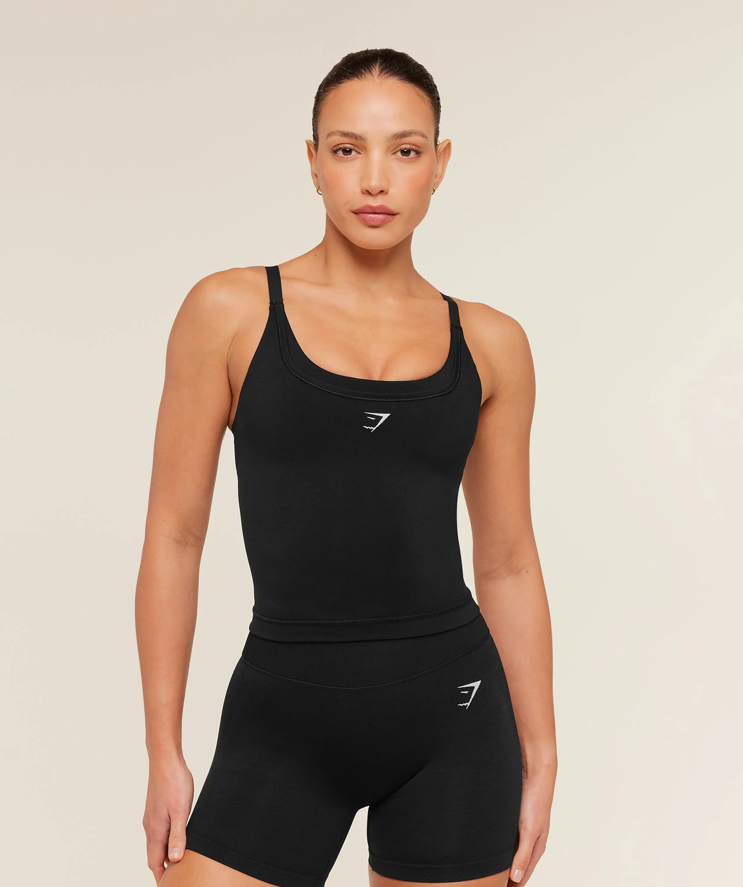
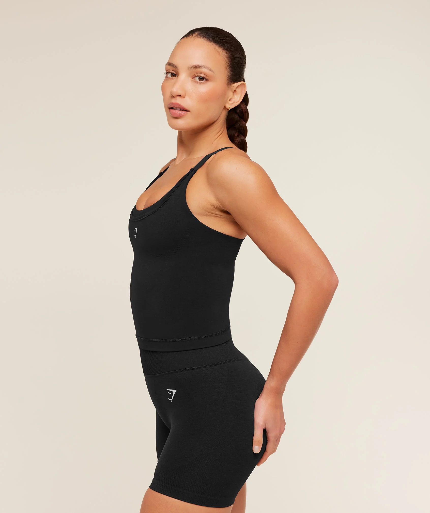

Journey sensing
Collect page-level signals across hovers, clicks, uploads, reviews, delivery checks, dwell time, cart changes, and repeat visits.
Product thesis
Cursor Commerce watches the customer journey as it happens: what people hover, compare, revisit, upload, check, abandon, and return to. Then it decides whether the shopper needs help and suggests the best next action, from fit guidance to skin-context analysis, sneaker try-on, delivery clarity, reviews, or an offer.


A shopper might never open a chat bubble, but they still leave signals. They zoom into photos, compare ingredients, inspect sizing, read reviews, check delivery, upload a reference, or pause before buying. Those behaviors are live intent.
watch
infer
act
For the first version, DOM events are enough to build useful context: option hovers, image interest, delivery checks, review reading, form interaction, quantity changes, repeated visits, and page dwell. Sensitive uploads, such as skin or body photos, should be explicit and optional.
page
media
input
time
cart
The assistant should feel like a retail associate who knows when to speak softly. It should not interrupt every click, image view, or scroll. The message must match the shopper's current uncertainty, and include caution where the answer may be wrong or subjective.
fit
skin
try-on
match
offer
The first version should prove that the assistant can wait, notice, and intervene with the right action. Start with apparel because it is easy to demo, then expand by adding one more product-category uncertainty at a time.
V1
V1
V1
V2
Feature set
The system watches the journey, understands the likely uncertainty, and chooses the lightest useful response. The apparel page is the demo, but the same pattern works across categories where shoppers need confidence before buying.
Collect page-level signals across hovers, clicks, uploads, reviews, delivery checks, dwell time, cart changes, and repeat visits.
Decide whether the shopper needs help, what kind of help fits the moment, and whether the assistant should stay quiet.
Offer sneaker-on-foot, apparel try-on, accessory preview, shade matching, or room/product visualization from image attention.
For skincare, ask for optional skin context or a close-up image, then answer with clear uncertainty and non-medical warnings.
Summarize reviews, ingredients, materials, fit notes, return policies, and delivery timing when the shopper studies those areas.
Use dwell, cart state, quantity changes, and purchase readiness to suggest an offer, bundle, or reassurance at the right time.
The current demo uses an apparel product to prove the interaction pattern: collect customer-journey signals, infer hesitation, then respond near the cursor. The same architecture can support skincare, sneakers, accessories, electronics, or any page where shoppers need contextual confidence.